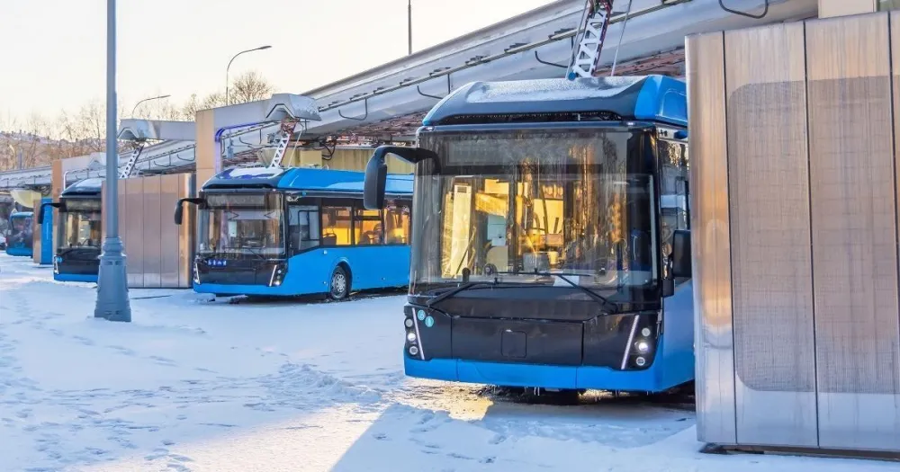

Electric bus operations · cold climates
Planning resilient electric bus fleets in cold regions
Problem. In cold winters, electric buses lose range and cost more to run, and the local grid can only deliver so much power.
Contribution. I built a simulation that mimics a whole bus fleet in winter, then finds the best way to plan buses and charging around it.
Findings. In the cold, buses can need up to a third more energy — so cities must plan extra buses and charging to keep service reliable.
Role. Lead author — built the model and ran the analysis.